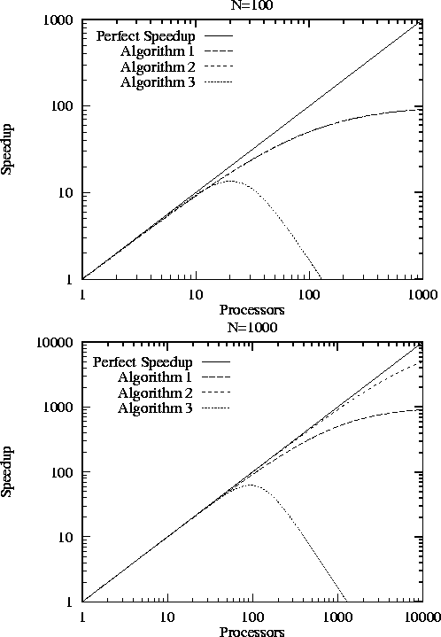
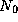
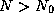
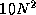
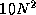

![[DBPP]](pictures//asm_color_tiny.gif)


![[Search]](pictures//search_motif.gif)
We introduce the topic of performance modeling by describing three techniques sometimes used to characterize the performance of parallel algorithms. We explain why each is inadequate for our purposes.
A common observation regarding parallel processing is that every algorithm has a sequential component that will eventually limit the speedup that can be achieved on a parallel computer. (Speedup, as we shall soon define more formally, is the ratio between execution time on a single processor and execution time on multiple processors.) This observation is often codified as Amdahl's law , which can be stated as follows: if the sequential component of an algorithm accounts for 1/s of the program's execution time, then the maximum possible speedup that can be achieved on a parallel computer is s . For example, if the sequential component is 5 percent, then the maximum speedup that can be achieved is 20.
In the early days of parallel computing, it was widely believed that this effect would limit the utility of parallel computing to a small number of specialized applications. However, practical experience shows that this inherently sequential way of thinking is of little relevance to real problems. To understand why, let us consider a noncomputing problem. Assume that 999 of 1000 workers on an expressway construction project are idle while a single worker completes a ``sequential component'' of the project. We would not view this as an inherent attribute of the problem to be solved, but as a failure in management. For example, if the time required for a truck to pour concrete at a single point is a bottleneck, we could argue that the road should be under construction at several points simultaneously. Doing this would undoubtedly introduce some inefficiency---for example, some trucks would have to travel further to get to their point of work---but would allow the entire task to be finished more quickly. Similarly, it appears that almost all computational problems admit parallel solutions. The scalability of some solutions may be limited, but this is due to communication costs, idle time, or replicated computation rather than the existence of ``sequential components.''
Amdahl's law can be relevant when sequential programs are parallelized incrementally. In this approach to parallel software development, a sequential program is first profiled to identify computationally demanding components. These components are then adapted for parallel execution, one by one, until acceptable performance is achieved. Amdahl's law clearly applies in this situation, because the computational costs of the components that are not parallelized provide a lower bound on the execution time of the parallel program. Therefore, this ``partial,'' or ``incremental,'' parallelization strategy is generally effective only on small parallel computers. Amdahl's law can also be useful when analyzing the performance of data-parallel programs, in which some components may not be amenable to a data-parallel formulation (see Chapter 7).
Descriptions of parallel algorithms often characterize performance by stating something like the following:
We implemented the algorithm on parallel computer X and achieved a speedup of 10.8 on 12 processors with problem size N=100 .Presumably, this single data point on a small number of processors is intended as a measure of algorithm quality. A speedup of 10.8 on 12 processors may or may not be regarded as ``good.'' However, a single performance measurement (or even several measurements) serves only to determine performance in one narrow region of what is a large multidimensional space, and is often a poor indicator of performance in other situations. What happens on 1000 processors? What if N=10 or N=1000 ? What if communication costs are ten times higher? Answering these questions requires a deeper understanding of the parallel algorithm.
The following three equations emphasize the limitations of observations as a tool for understanding parallel performance. Each is a simple performance model that specifies execution time T as a function of processor count P and problem size N . In each case, we assume that the total computation performed by an optimal sequential algorithm scales as N+N .
 component on every processor. There are no other sources of
overhead.
component on every processor. There are no other sources of
overhead.
These algorithms all achieve a speedup of about 10.8 when P=12 and N=100 . However, they behave differently in other situations, as illustrated in Figure 3.1. With N=100 , all three algorithms perform poorly for larger P , although Algorithm (3) does noticeably worse than the other two. When N=1000 , Algorithm (2) is significantly better than Algorithm (1) for larger P .

Figure 3.1: Efficiency as a function of P
for three different
algorithms (described in the text). The upper figure is for
N=100
, and the lower figure is for N=1000
. Notice the use
of logarithmic scales. When N=100
, Algorithms (1) and (2) are
indistinguishable.
Textbooks frequently characterize the performance of parallel algorithms by stating something like the following:
Asymptotic analysis reveals that the algorithm requires time on processors.That is, there exists a constant c and minimum problem size  such that for all , cost (N) on N processors. This relationship tells how cost varies with N when N and P are large.
While this information is interesting, it is often not directly
relevant to the task of developing an efficient parallel program.
Because it deals with large N
and P
, it ignores
lower-order terms that may be significant for problem sizes and
processor counts of practical interest. For example, the actual cost
of an algorithm with asymptotic complexity of might be
10 N + N
 . The 10 N
component is larger
for N<1024
and must be incorporated in a performance model if
problems of interest are in this regime. A second deficiency of
asymptotic analysis is that it says nothing about absolute cost.
Asymptotic analysis would suggest that an algorithm with cost
1000 N
is superior to an algorithm with cost .
However, the latter is faster for N<996
, which again may be the
regime of practical interest. A third deficiency is that such
analyses frequently assume idealized machine models that are very
different from the physical computers for which we develop programs.
For example, they may assume the PRAM model, in which communication
costs are assumed to be nil.
. The 10 N
component is larger
for N<1024
and must be incorporated in a performance model if
problems of interest are in this regime. A second deficiency of
asymptotic analysis is that it says nothing about absolute cost.
Asymptotic analysis would suggest that an algorithm with cost
1000 N
is superior to an algorithm with cost .
However, the latter is faster for N<996
, which again may be the
regime of practical interest. A third deficiency is that such
analyses frequently assume idealized machine models that are very
different from the physical computers for which we develop programs.
For example, they may assume the PRAM model, in which communication
costs are assumed to be nil.
Asymptotic analysis has a role to play in parallel program design. However, when evaluating asymptotic results, we must be careful to identify the machine model for which the results are obtained, the coefficients that are likely to apply, and the N and P regime in which the analyses hold.
© Copyright 1995 by Ian Foster